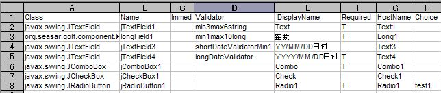
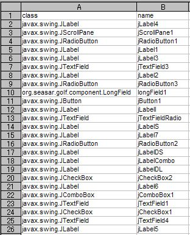
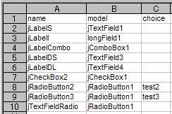

|
-
- Sampleの説明でも紹介しましたが、下記の様に、CSV ファイルを用意するだけで、簡単に各項目に
Validatorの設定が出来ます。例えば、formManager.setValidationFromCsvResource("example1_bind.csv");

- それでは、各項目を見ていきましょう
- Class この項目は、参考情報です。golfを「Debug」MODE（golf.propetiesで設定）動かすと、自動的に、下記の様にJComponentの
Classと変数名のCSV（例えば、org.seasar.golf.example.frame.Example1Frame.csv）が作成されますので、これから簡単にコピペ出来ます

- Name JComponentの変数名です。なおBindingされたValue Model内容のGet/Setは、この名前を使用して
FormManager#getValue()/FormManager#setValue()で行います。
注意 Programから値をSetする場合は、JComponentのsetText()等ではなく、必ずこのMethodを使用して下さい。
- Immed Defaultでは、JComponentのFocusがLostした時点で、Value ModelのDataが変更されますが、
HOT KEYの使用などで、即時に変更したい場合は、この欄に「T」と入力して下さい。
- Validator Diconで定義しているValidatorの名前を入力します。複数ある場合は、コンマ（,）区切りで入力可能です。
- DisplayName Error発生時に、表示される項目名を指定出来ます。未入力の場合は、Nameが使用されます。
- Required Focus Lost時のCheckでは必須入力のCheckは行いませんが、この欄に「T」と入力し、Programから
formManager.getFormValidationManager().Validate(true);と呼び出す事（通常はServerのTrasactionを呼び出す時）により、Check出来ます
- HostName Serverを呼び出す時、この項目名で、RequestDataのfields HashMapに自動的にSet出来ます。
また、ServerからResultDataを受け取った場合も、逆に自動的にSet可能になります。
- Choice JRadioButtonの場合、Selectされた場合のValueをこれで定義します。尚この場合複数のRadioButtonを一つの
ValueModelにBindingする必要がありますので、まず最初の一つだけここに定義します。２つめ以降は、このValueModelに後で追加でBindingします。
- すでに定義した、ValueModelに追加でJComponentをBindingするには、例えば
formManager.setBindFromCsvResource("example1_bind.csv"); で出来ます

- Golf 概要
- GOLF HOMEへのリンク
|
| | | | Copyright©
2004-2005, The Seasar Foundation and the others. All rights reserved. |
| |